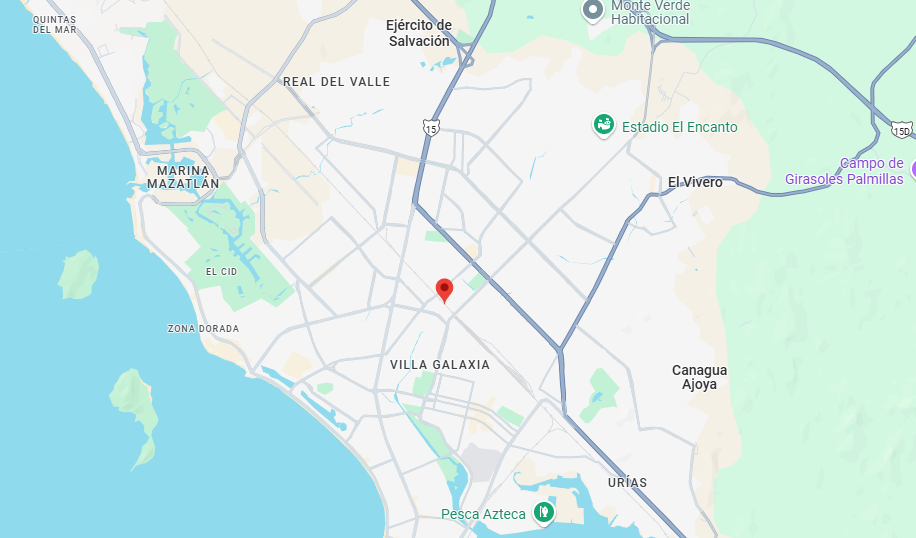

Este mapa muestra un marcador centrado en Mazatlán, Sinaloa
Carga el mapa centrado en el punto de origen, usa DirectionsService para calcular la ruta desde el origen hasta el destino y muestra la ruta en el mapa usando DirectionsRenderer
Este mapa muestra múltiples ubicaciones y agrupar marcadores mediante MarkerClusterer, mejorando la visualización y eficiencia en mapas interactivos.

Este mapa permite a los usuarios dibujar polígonos, rectángulos o líneas, muestra las coordenadas de las formas dibujadas en un panel lateral y permite eliminar las formas con un botón.